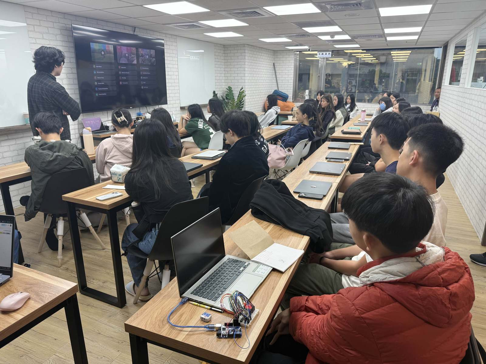
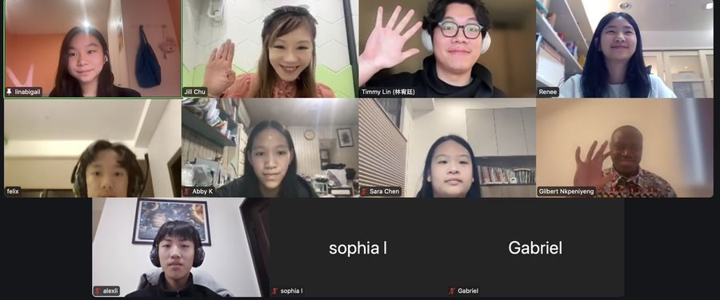
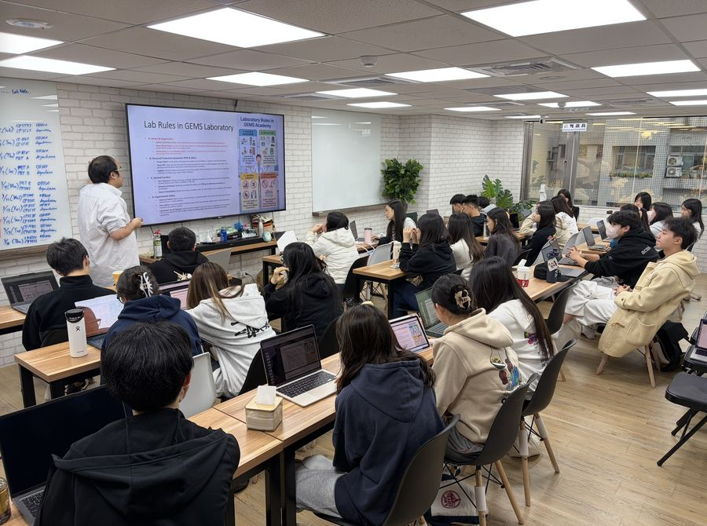
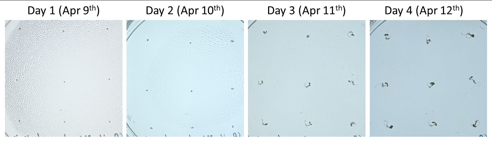
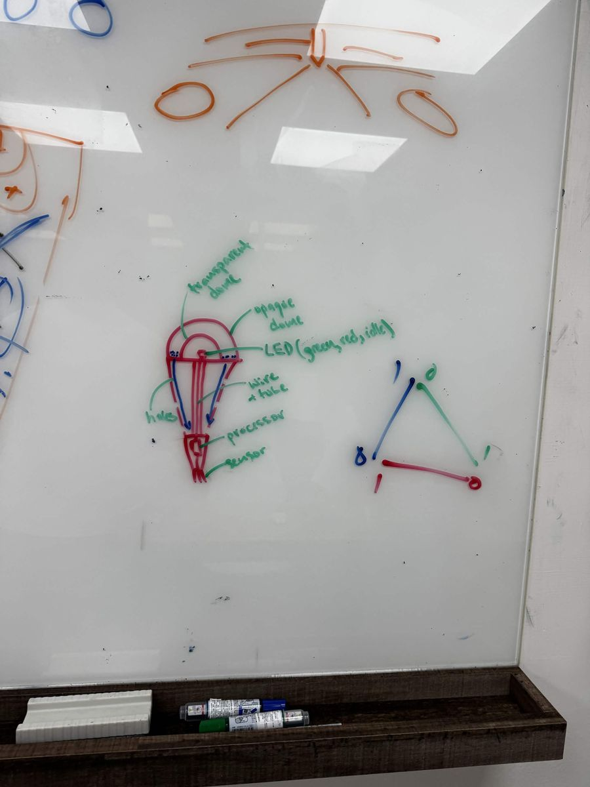

01
Firsts
At the first meeting there was no project yet, and one member had already brought a microcontroller. Over the next four months each subteam took its own first step.





On the wiki: Milestone / Human Practices / Development